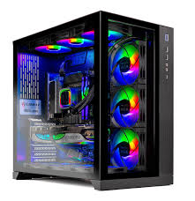

Types of PC's
There are many types of personal computers, some of the many types inlude: desktops, laptops, and mini PC's.
Although there are more types, these are the main kinds.
Desktops
Desktop computers are one of the most common types of PC.
They are designed to be used on a desk and can't really be moved. Compared to laptops they offer much less convenience
but they make up with much better performance, upgradability, and cooling. Desktop computers are the best
choice if you want the best performace and don't care about portability.

Laptops
laptops are defenitly the most common type of computer because of their
portabily, price, and low power consumtion compared to standard desktops. the downside to laptops is their
decreased performance and cooling, a laptop with the same specs as a desktop will always be worse
and run a lot hotter. Overall laptops are the best choice if you want a computer that is easy to use, setup, and move around.


Mini PC's
The last type of PC is the mini pc, it "claims" to offer the best of both
desktops and laptops, but in reality it falls short on both ends. Mini PC's are small and seamless like laptops but offer
increased performance and cooling like desktops. even though they are trying to be similar to desktops,
they generally have much worse specs because of limited space. Overall mini PC's arent horible and new mini PC's
like the Mac mini are really starting to get better, but if you know how to use them they may be a good option for you.